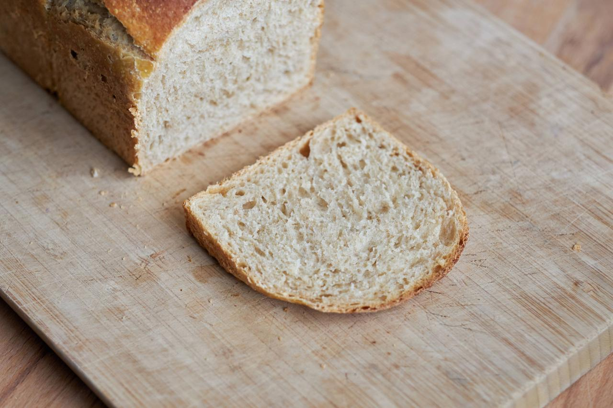

Brioche
Um den klassischen Hefezopf zu backen, benötigt man normalerweise frische Hefe. Ich arbeite gerne mit langer Teigführung und entsprechend wenig Hefe, weshalb ich es nie hinbekomme, einen 42 g Würfel Hefe aufzubrauchen, bevor er verdirbt oder seine Wirkung verliert. Daher versuche ich, ausschließlich mit meinem Sauerteig zu backen. Ich denke, es ist es mir gelungen, einen leckeres und lockeres Brioche ganz ohne Hefe zu backen. Man braucht nur etwas Geduld und einen aktiven Sauerteig.

Sauerteig
- 100 g Weizenmehl Type 550
- 100 g Wasser, warm
- 15 g Anstellgut, aktiv
Kochstück
- 135 g Sojamilch
- 35 g Weizenmehl Type 550
Hauptteig
- Sauerteig
- Kochstück
- 80 g Sojamilch, warm
- 40 g Zucker
- 5 g Salz
- 380 g Weizenmehl Type 550
- 40 g Margarine, zimmerwarm
Eistreiche
- 2 EL Sojamilch
- 1/2 TL Ahornsirup
- 1 Pr Kurkuma
- 1 Pr Salz
Dieses Rezept ergibt ein samtig weiches Broiche, das durch den Sauerteig und die lange Teigführung sehr mild und aromatisch schmeckt. Das Kochstück sorgt für eine feuchte und elastische Krume. Das Weizenmehl kann in diesem Rezept auch gerne durch ein helles Dinkelmehl ausgetauscht werden. Die Sojamilch kann durch einen beliebigen ungesüßten Pflanzendrink wie zum Beispiel Hafermilch oder Mandelmilch ersetzt werden.
Dieser Teig lässt sich auch super zu kleinen Brötchen verarbeiten, die direkt nebeneinander in eine Springform gesetzt werden, oder auch zu einem Hefezopf.
Die Zutaten für den Sauerteig gut vermischen und 12 Stunden bei Raumtemperatur gehen lassen.
Für das Kochstück Mehl und Sojamilch in einem kleinen Topf unter ständigem Rühren aufkochen und dann direkt auf der Oberfläche abgedeckt in einem kleinen Schälchen 12 Stunden im Kühlschrank lagern.
Am Backtag rechtzeitig das Kochstück aus dem Kühlschrank holen und aufwärmen lassen.
Mit einer Küchenmaschine alle Zutaten für den Hauptteig bis auf die Margarine verkneten und dann nach und nach die weiche Margarine hinzufügen. Insgesamt dauert dieser Schritt etwa 10 Minuten, bis die ganze Margarine eingeknetet ist.
Anschließend den Teig aus der Schüssel holen und auf der Arbeitsfläche nochmal von Hand durchkneten und zu einer Kugel formen.
Nun den Teig zurück in die Schüssel geben und mit einem feuchten Küchentuch abgedeckt an einem warmen Ort (optimal 25-27 °C) etwa 3 Stunden.
Nun den Teig in 4 gleich große Stücke einteilen und zu Kugeln vorformen. Abgedeckt 10 Minuten ruhen lassen. In der Zwischenzeit die Zutaten für die Eistreiche vermischen.
Nun die Teiglinge zu einer strammen Kugel formen. Dafür auf der unbemehlten Arbeitsfläche umgekehrt, also mit der Naht nach oben, flachdrücken und den Teig von allen Seiten in die Mitte falten. Nun die Kugel umdrehen und mit der Handinnenfläche über die Arbeitsfläche kreisen, indem man die Hand wie eine Schale auf den Teigling legt.
Die Kugeln nebeneinander in eine gefettete Kastenform mit 30 cm Länge setzen und mit der Hälfte der Eistreiche bepinseln. Abgedeckt bei Raumtemperatur nochmal 30-60 Minuten gehen lassen, bis der Teig sichtbar aufgegangen ist und währenddessen den Ofen auf 200°C aufheizen.
Vorsichtig mit dem Rest der Eistreiche bepinseln. Nach Belieben mit Hagelzucker oder gehobelten Mandeln bestreuen.
Den Ofen auf 180°C stellen und 40-45 Minuten backen, bis die Brioche eine goldgelbe Farbe hat.

Wir essen das Brioche am liebsten lauwarm mit selbstgemachtem Erdnussmus und Marmelade. Als kleine Brötchen geformt kann man diese einfrieren und bei Bedarf auf dem Toaster auftauen.